On the Subject of Simazes
This appears to be some kind of maze, probably purchased at a dollar store.
- Find the grid with the matching coloured markings.
- Four pairs of coloured buttons will flash.
- Using the correct table below, locate two coordinates.
These are the start and end points, respectively. - The defuser must navigate the maze from start to end in the shortest possible distance without crossing the lines shown on the module, pressing only buttons that move to a coloured space.
- The original pairs will flash followed by another two.
Repeat the sequence of colours previously traversed over before navigating the maze again with the next pair of coordinates as the new start and end points. - The sequence of coordinates will lenghten by one each time a sequence is input correctly until the module is disarmed.
- Any input will pause the flashes. No further inputs within 3 seconds will cause the flashing to resume, clearing all inputs.
| 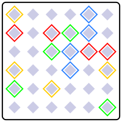 | 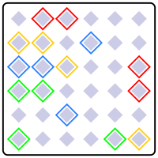 | 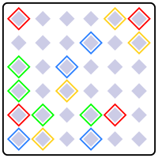 | 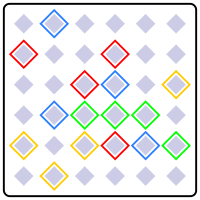 | 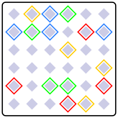 |
|---|---|---|---|---|
| 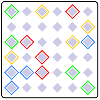 | 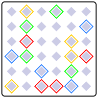 |  | 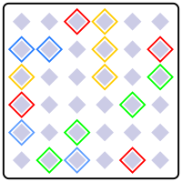 | 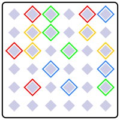 |
| 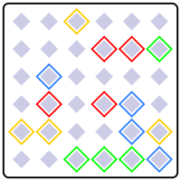 | 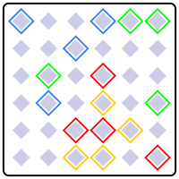 | 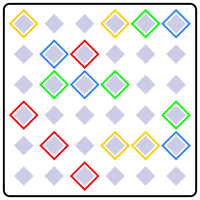 | 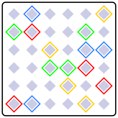 | 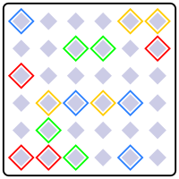 |
| 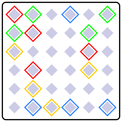 | 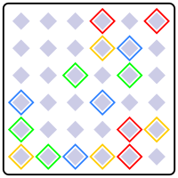 | 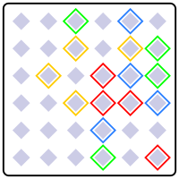 |